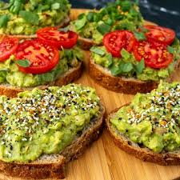

Home
Avocado Toast

I like making this Meyer lemon avocado toast recipe when I have a ripe avocado I don't want to waste. It is delicious and a wonderful source of fiber and fatty acids. Feel free to get creative with the ingredients! Substitute cilantro with mint or parsley or chia seeds with sesame or poppy seeds.
Ingredients
- 2 slices whole grain bread
- 1/2 avocado
- 2 tbsp chopped fresh cilantro, or more to taste
- 1/4 tsp Meyer lemon juice, or to taste
- 1 pinch cayenne pepper
- 1 pinch sea salt
- 1/4 tsp chia seeds
Steps
- Toast bread slices to desired doneness, 3 to 5 minutes.
- Mash avocado in a medium bowl; stir in cilantro, Meyer lemon zest, Meyer lemon juice, cayenne pepper, and sea salt until well combined. Spread avocado mixture onto toast; top with chia seeds.